２０２６年１０月１７日から、全国のしまむら店舗およびオンラインストアにてミルモでポン！とのコラボアイテムが発売されました。
発表されたのは１０月１６日で、なんと販売開始日の前日！！！
いきなりの告知に日本中のミルモファンがびっくりしました（大げさ？
なお「ミルモでポン！」の他に、「きらりん☆レボリューション」「極上！！めちゃモテ委員長」とのコラボグッズも同時発売されていました。
いつも通りグッズの全貌を紹介した後に、私の購入レポートも載せていきますね。
まずはしまむらによる告知です。
SNS中心での告知でしたが、この告知が行われたのが１０月１６日(^◇^;)
しまむらとのコラボは2024年から続いていて、2026年は無いのかなぁと思っていたところでの発表だったので、ほっと一安心したのが第一印象でしょーか。
10/17(土)～、全国のしまむら店舗で「ミルモでポン！」「きらりん☆レボリューション」「極上!!めちゃモテ委員長」のアイテムが登場！ ラインナップは画像をチェック♪ しまむらパーク(オンラインストア)では、同日15:00～販売開始！ https://t.co/DgoxZt3cnA https://t.co/i5Wez5VC4o
— ファッションセンターしまむら (@shimamura_gr) October 16, 2026
そして以下が今回のグッズの一覧になります。
（画像は記録目的の引用のため、PC上でSNSの添付画像をスクショさせていただきました）
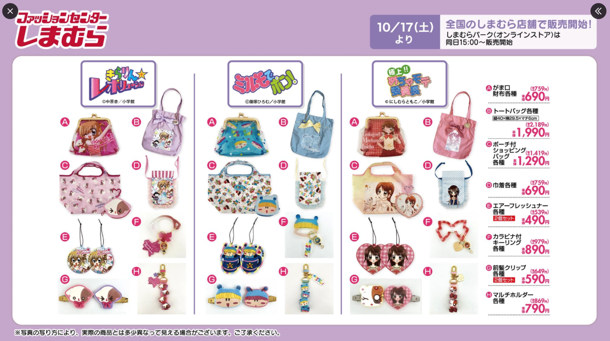
グッズは以下の８種類で、この商品構成が「ミルモでポン！」「きらりん☆レボリューション」「極上!!めちゃモテ委員長」で共通となっていました。
- がま口財布 690円（税抜）
- トートバッグ 1,990円（税抜）
- ポーチ付きショッピングバッグ 1,290円（税抜）
- 巾着各種 690円（税抜）
- エアーフレッシュナー 490円（税抜）
- カラビナ付キーリング各種 890円（税抜）
- 前髪クリップ２個セット 590円（税抜）
- マルチホルダー 790円（税抜）
ここからは私の購入レポートになります。
８種類のうち４種類をお店で購入しましたので以下に紹介していきます。
私は発売日当日の朝１０時半頃に、地元のしまむらへ行きました。
まだオープンして３０分ほどなのに、お店の中には１０人ほどお客さんが来ていました。
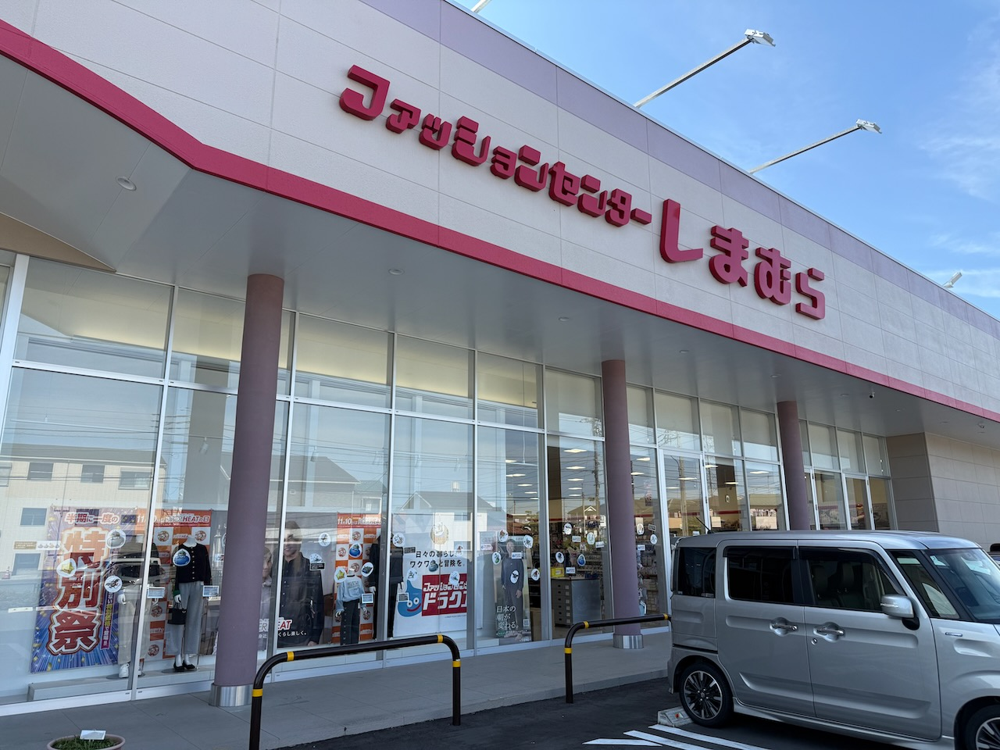
入り口から入って少し進んだ先に、幅１メートルくらいの販売コーナーを発見！
各商品１個ずつしか並べられていなくて、私が購入するとそのグッズは売り切れに・・
もしかしたらバックヤードに在庫があるのかもしれませんが、過去の販売状況を踏まえると各店舗で１個ずつの販売のような気がします。
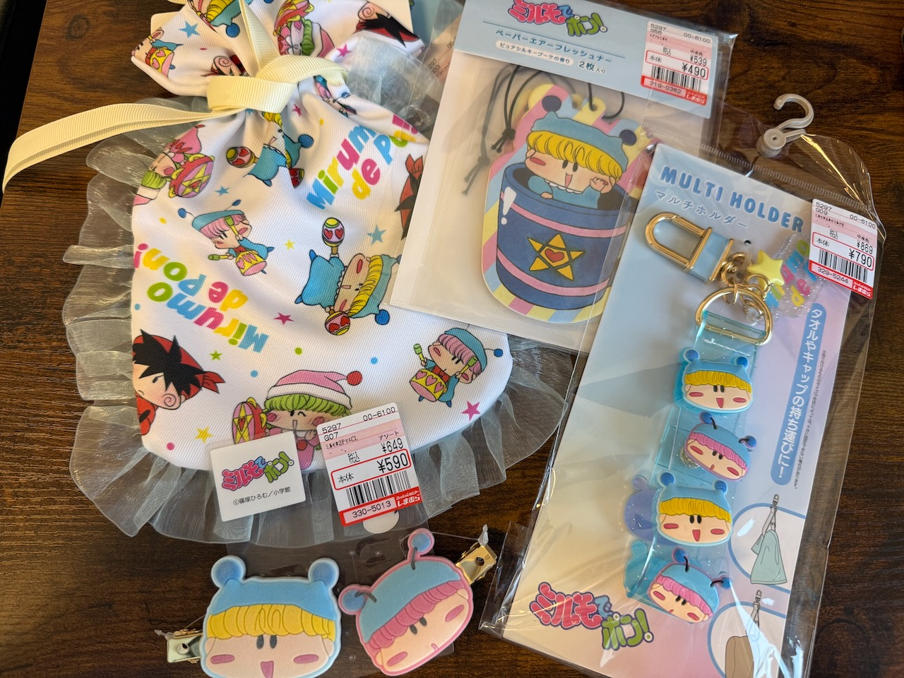
こちらが私が購入したグッズたち（形４種類）です。
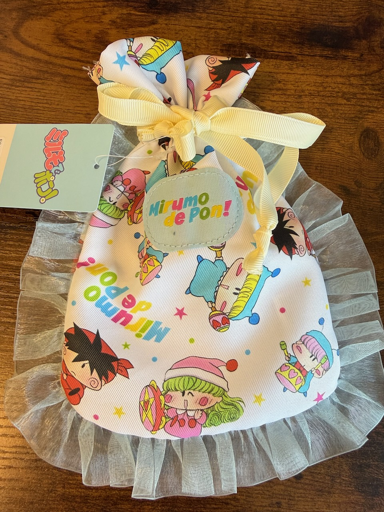
まずは巾着から。
まわりにフリルがついて女子力の高い巾着になっています。
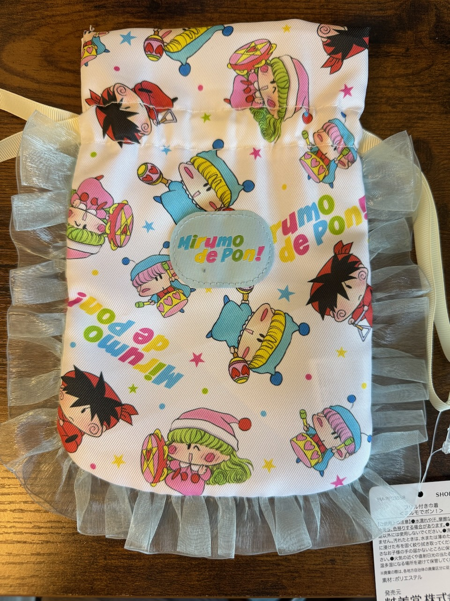
リボンを解くとこのようになります。
ちなみに中央のカラフルなロゴが今回のグッズに共通して使われていました。
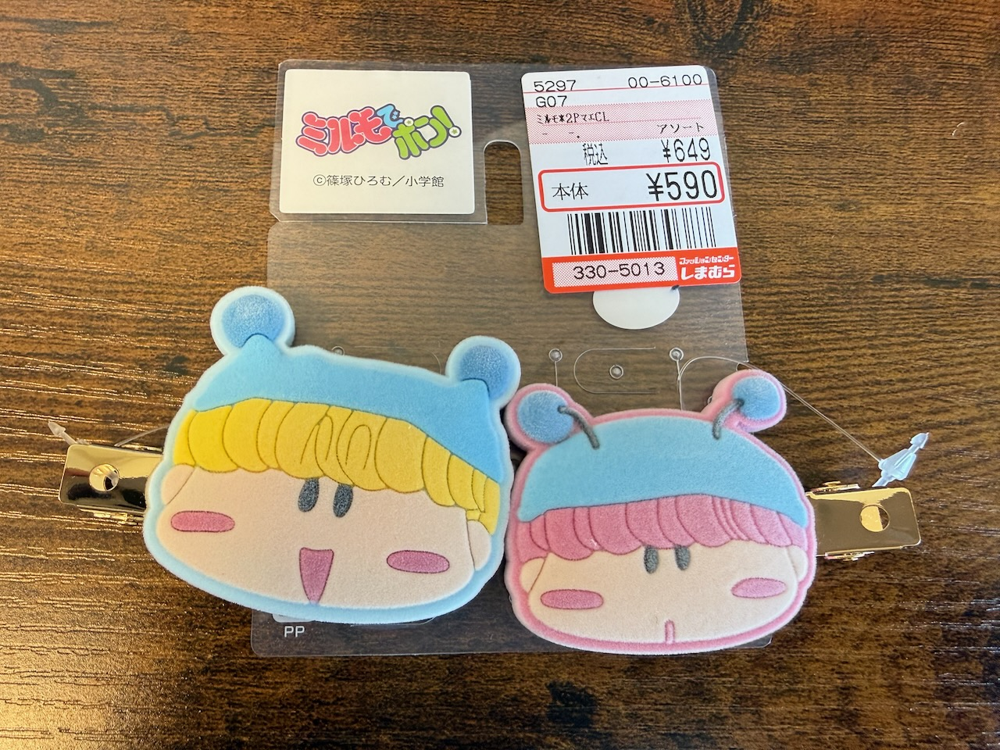
前髪クリップ２個セットです。
割と大きめサイズなので、身につけると遠くからでも目立ちそうです！
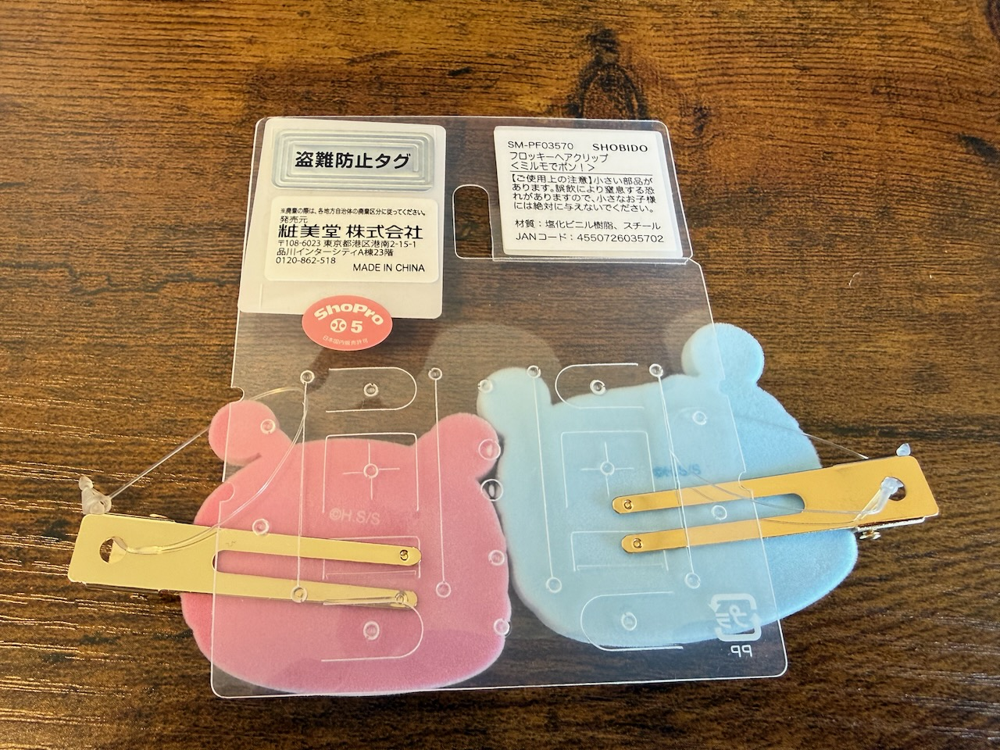
裏側。
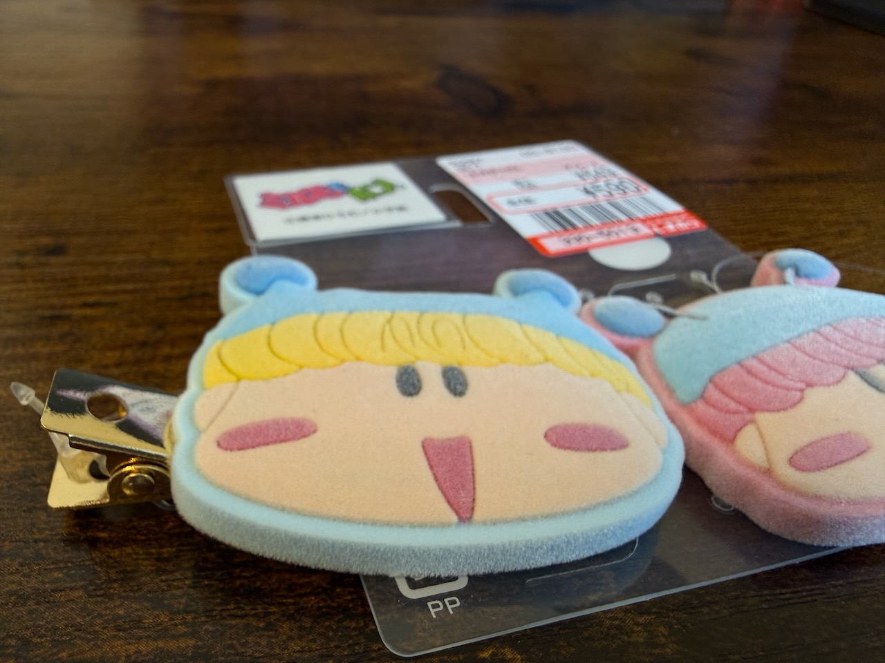
厚みもあるので持つとずっしり重さを感じます。
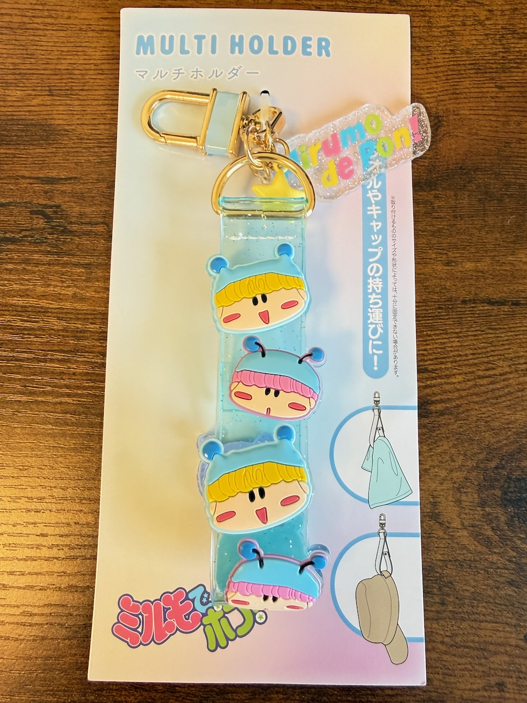
マルチホルダーです。
説明書きのように、タオルや帽子を掛けられるようになっています。
「持ち運びに！」とあるので、このマルチホルダーをカバンにつける使い方になるのですね。
あとムルモの目が前髪で半分隠れちゃってるのが何気にかわいかったり。
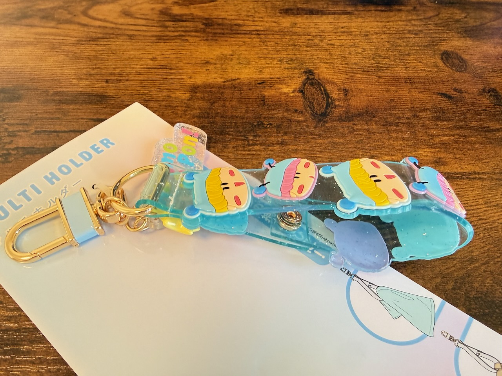
金具やホルダー部分にキラキラ感があってかわいいです。
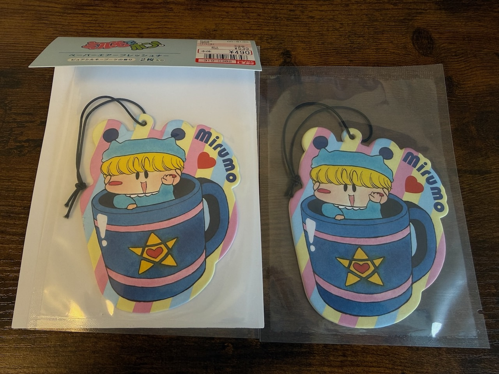
最後にエアーフレッシュナー（２個セット）です。
パッケージを開封して取り出すと「ピュアシルキーブーケの香り」がします。
思ってた以上に香りがして、匂いを嗅ぐと気持ちが落ち着きます(^^)
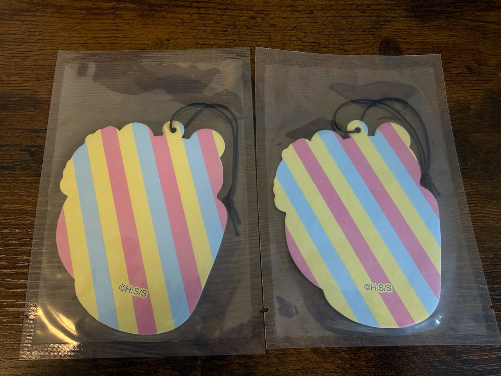
裏面はカラフル仕様になっていました。
レポートは以上です。
すでに定番化してきているミルモとのコラボ、ぜひ来年も新しいグッズを発売してほしいところですね！
(2026/11/15)